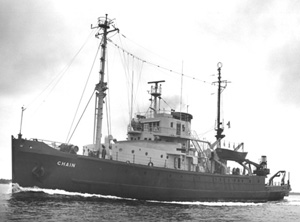

|  copyright - WHOI |
|
In 1958, the Military Sea Transportation Service (MSTS), took over the
operation of Chain, a Navy salvage vessel, and under an agreement
with the Navy, the ship came to Woods Hole. Chain's first nine cruises
at WHOI were made with an MSTS crew. In 1959, WHOI assumed operation of
the vessel.
Chain made a total of 129 scientific cruises, including a cruise
that took her around the world in 1970-1971. She traveled some 600,000
miles and was used in every type of ocean science. Long a favorite for
her seaworthiness, Chain’'s last cruise ended in December 1975.
In June 1979 the vessel was towed away for scrap.